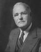

FORMER JUDGES
Judge Huber M. DeVoss
Huber DeVoss was born in Farmland, Randolph County, Indiana on October 16, 1979. In
1900. he became deputy county clerk. In 1902 he was admitted to the bar in Adams
County and served as court reporter until 1917. In 1921, he was elected mayor of Decatur.
In 1933, he began a six-year term as Judge of the Adams Circuit Court. Judge DeVoss
was elected to the Indiana Appellate Court where he served one term, from January 1,
1939 to January 1, 1943. He was Chief Judge for two of the court’s terms, November 1939
and November 1941.
He died suddenly on June 2, 1944.
1900. he became deputy county clerk. In 1902 he was admitted to the bar in Adams
County and served as court reporter until 1917. In 1921, he was elected mayor of Decatur.
In 1933, he began a six-year term as Judge of the Adams Circuit Court. Judge DeVoss
was elected to the Indiana Appellate Court where he served one term, from January 1,
1939 to January 1, 1943. He was Chief Judge for two of the court’s terms, November 1939
and November 1941.
He died suddenly on June 2, 1944.
